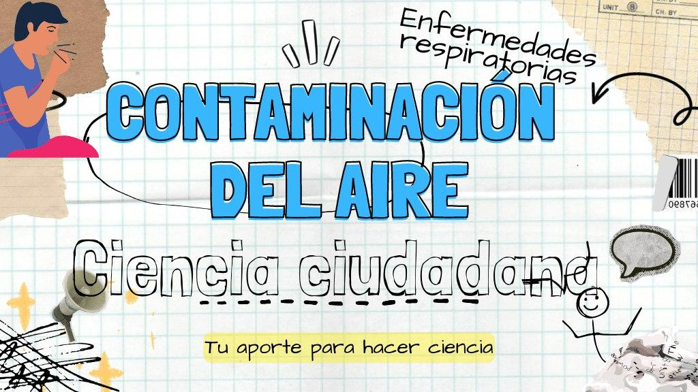

Encuesta sobre Prevalencia de Asma y Rinoconjuntivitis Alérgica a través de Ciencia Ciudadana en la Provincia de Córdoba
Sr. Padre, Madre o Encargado.
Me es grato dirigirme a usted para invitarlo a participar de un estudio de investigación que consiste en una encuesta para conocer la cantidad de niños, niñas y adolescentes con problemas respiratorios y alérgicos (asma y rinoconjuntivitis alérgica) y tratar de determinar el riesgo y los factores que los producen.
Es popularmente conocido que en nuestra provincia hay gran cantidad de problemas respiratorios y probablemente los factores ambientales colaboren, pero nunca se ha realizado un trabajo siguiendo criterios científicos para determinar si es verdad.
La encuesta es ANÓNIMA y VOLUNTARIA, su participación es importante para conocer nuestra realidad. Si tiene alguna pregunta haga clic en icono de Whatsapp o envíeme un Correo Electrónico y a la brevedad posible responderé su mensaje.
Esta encuesta cuenta con la aprobación del Comité Institucional de Evaluación Ética de las Investigaciones en Salud (CIEIS), Hospital Universitario de Maternidad y Neonatología, Rodríguez Peña 285, Córdoba centro, Teléfono: 5353980 / 4473980, interno 73005 - Horario de atención del CIEIS: de 09:30 a 14:00. Investigador principal: Esp.Ing. Abraham Coiman, Teléfono: 1156655049.
Si su hijo es menor 13 años haga clic en el siguiente enlace http://bit.ly/Encuestainfancia para acceder al consentimiento (autorización) y formulario (encuesta) en línea.
Si su hijo es adolescente entre 13 y 18 años haga clic en el siguiente enlace http://bit.ly/Autorizacionadolescentes para acceder al consentimiento (autorización) en línea.
Si desea ver la charla que recibirá su hijo/a sobre Contaminación del Aire y Enfermedades Respiratorias, haga clic en el siguiente enlace https://bit.ly/EnfermedadRespiratoriaCalidadAire.
Gracias
Esp.Ing. Abraham Coiman
Estudiante Doctorado en Geomática y Sistemas Espaciales
Instituto de Altos Estudios Espaciales Mario Gulich (CONAE/UNC)